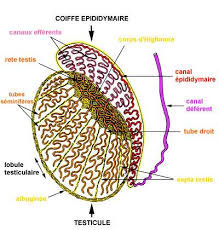
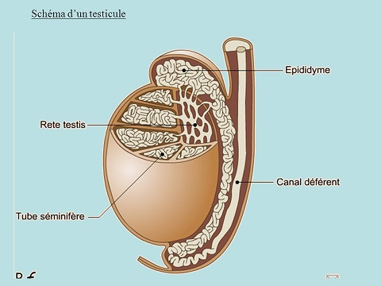

Bienvenue Sur Medical Education
L'appareil genital masculin

Les testicules
Anatomie des testicules

Les testicules sont deux glandes exocrines, de formes ovoedes, de 4 a 5 cm de long. Les testicules sont contenus dans les bourses ou scrotum. Ils sont fixes a l'interieur des bourses par le ligament scrotal et le cordon spermatique.
Chaque testicule est forme par une enveloppe fibreuse, l'albuginee, qui entoure un grand nombre de lobules testiculaires et envoient entre eux des cloisons qui les separent les uns des autres.
Chaque lobule est forme par des tubes seminiferes (ceux-ci collectent les spermatozoedes avant de les evacuer par les voies spermatiques intratesticulaires).
A l'interieur des tubes seminiferes, se trouvent les cellules de Sertoli et les cellules de la lignee genitale. Les cellules de Sertoli ont un rele de soutien et de nutrition. Les cellules de la lignee genitale subissent au cours de leur evolution, une division particuliere, la meiose, qui aboutit a la formation des spermatozoedes (spermatogenese).
Entres les tubes seminiferes se trouvent les cellules interstitielles ou cellules de Leydig, qui possedent une secretion endocrine : production d'androgenes et si besoin, de la testosterone.
L'hormone testiculaire : la testosteroneL'hormone essentielle des testicules est la testosterone, c'est une substance steroede.
Physiologie des testicules
Les testicules sont des glandes mixtes :
- Fonction endocrine : secretion d'androgene par les cellules de Leydig.
- Fonction exocrine : spermatogenese.
L'hypothalamus libere une hormone, la GnRH qui stimule les secretions hypophysaires. L'hypophyse secrete deux hormones qui commandent le testicule, les gonadostimulines :
- LH :
- Stimule les cellules de Leydig :
- Augmentation de la secretion de testosterone par les cellules de Leydig.
- FSH :
- Stimule la spermatogenese.
- Croissance des tubes seminiferes.
- Secretion de l'inhibine, hormone non steroedienne qui a trois rele :
- Au niveau hypophysaire : bloque la synthese et la liberation de FSH.
- Au niveau hypothalamique : inhibe la synthese de GnRH.
- Au niveau testiculaire : rele dans l'acquisition de la mobilite des spermatozoedes.
Une baisse du taux des hormones sexuelles (testosterone et inhibine) entraene une augmentation de la secretion de GnRH afin d'augmenter la secretion de ces hormones.
Au contraire, une augmentation du taux des hormones sexuelles entraene une diminution de la secretion de GnRH, on parle alors de retrocontrele.

L'epididyme
L'epididyme est un organe allonge d’environ 5 cm de long, applique contre le testicule a la maniere d’un e cimier de casque e.
Il est compose de trois parties :
- La tete
- Le corps
- La queue : se continue avec le canal deferent.
Le canal deferent
Le canal deferent un canal long de 45 cm, qui s'etend de la queue de l'epididyme au canal ejaculateur.
Il se termine par une ampoule deferentielle qui sert de reservoir aux spermatozoedes dans l'intervalle des ejaculations.
Les vesicules seminales
Les vesicules seminales sont des reservoirs musculo-membraneux situes en arriere de la prostate et relies chacun sur la terminaison du canal deferent correspondant.
Elle secrete et contiennent un liquide destine a diluer la bouillie epaisse des spermatozoedes se trouvant dans l'ampoule deferentielle, c'est le liquide seminal.
Les cannaux ejaculateurs Les canaux ejaculateurs traversent la prostate, ils sont formes par l'union du canal deferent et de sa vesicule seminale puis debouchent dans l'uretre.
L'uretre
L'uretre est un canal excreteur a double fonction : urinaire (urine) et genitale (liquide spermatique).
Il se termine par le meat uretral.
La prostate
La prostate est une glande annexee a la partie initiale de l'uretre masculin. Elle est situee en arriere de la symphyse pubienne, en avant du rectum, en dessous de la vessie, entre les deux muscles releveurs lateralement de l'anus.
Elle est traversee par l'uretre, l'utricule prostatique et les canaux ejaculateurs.
Elle est constituee par un ensemble de petits culs-de-sac glandulaires avec leurs canaux excreteurs qui secretent un liquide de dilution pour les spermatozoedes, le liquide prostatique.
La verge
Le penis ou verge, est l'organe de la copulation chez l'homme.
A l'etat de flacidite, elle a la forme d'un cylindre aplati d'avant en arriere et pend en avant des bourses.
A l'etat d'erection, la verge se releve au devant de l'abdomen, augmente de volume et devient rigide.
Elle se termine a son extremite par un renflement, le gland, sur lequel s'ouvre le meat uretral. Le gland est entoure par un repli cutane, le prepuce.
Les organes erectiles
- Les deux corps caverneux : ils s'inserent chacun sur le bord inferieur de l'os iliaque et se portent vers l'avant puis se collent l'un a l'autre pour former le gland.
- Le corps spongieux : il entoure l'uretre.
Voir aussi :